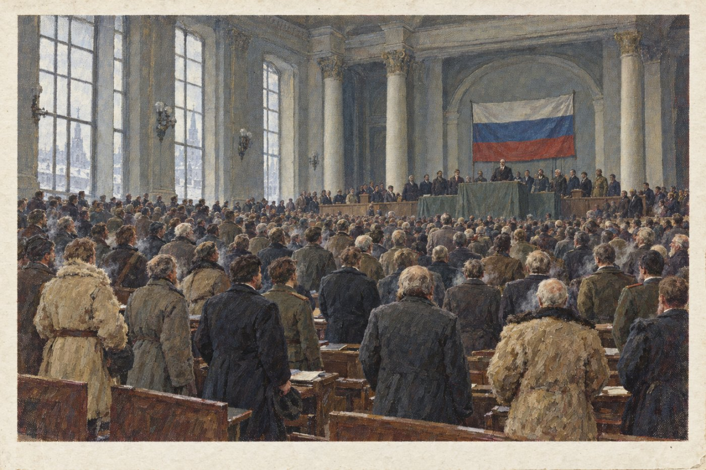

§1. Конец Смуты (1918–1920)

К лету 1918 года страна была расколота. В Москве правили большевики, которые в январе разогнали Учредительное собрание. На Волге, в Самаре, депутаты этого собрания создали своё правительство, Комитет членов Учредительного собрания, или Комуч. Ему помогал Чехословацкий корпус, то есть бывшие пленные чехи и словаки, ехавшие домой через Сибирь.
30 августа 1918 года в Москве после митинга на заводе Михельсона был смертельно ранен глава большевиков Ленин. В тот же день в Петрограде убили начальника городской ЧК Урицкого. Большевики объявили террор, но договориться между собой, кто теперь главный, не смогли. Власть на время взял Свердлов, человек осторожный, которого слушались, пока спорить было некогда.
Самыми решительными среди большевиков были двое. Троцкий командовал армией и жил в поезде под Казанью. Сталин распоряжался в Царицыне и приказов Троцкого не выполнял. Раньше их мирил Ленин, теперь мирить стало некому. В октябре Троцкий велел арестовать царицынский штаб, и военный суд расстрелял Сталина за неподчинение. Царицынские командиры взбунтовались, и город заняли донские казаки. Троцкий бросил фронт и поехал в Москву оправдываться, но товарищи испугались, что он станет новым Бонапартом, то есть генералом, который отнимет власть у революции. Его арестовали, и до суда он не дожил. В ноябре Свердлов умер от гриппа-испанки. У власти остались Зиновьев и Каменев, которые решительностью не отличались. Армия на Волге без командующего и без хлеба начала разбегаться.
Противники большевиков тем временем объединились. Ещё в сентябре они создали в Уфе общее правительство, Директорию, а в ноябре Народная армия Комуча взяла Нижний Новгород. В декабре 1918 года Зиновьев бежал за границу, а Каменев сдал голодную Москву в обмен на прощение для своих товарищей, и Директория вошла в город без боя. Партия большевиков уцелела, но с тех пор оставалась маленькой, и на выборах над ней больше смеялись, чем боялись её. Отдельные красные отряды воевали до 1920 года, но война была уже проиграна.
В марте 1919 года в Москве снова открылось Учредительное собрание. Оно объявило Россию демократической федеративной республикой и приняло закон о земле. Пашня помещиков перешла к крестьянам, а государство платило за неё прежним владельцам. Усадебный дом с парком и садом оставался хозяину. Так появились «усадьбы без земли», о которых вы читали в повестях тех лет.
Империя при этом распалась. Финляндия, Польша, Эстония, Латвия, Литва, Украина, Грузия, Армения, Азербайджан и Горская республика стали отдельными государствами. В 1920 году во Владивостоке провозгласили Дальневосточную республику, и Москва, у которой не было сил воевать за девять тысяч километров от столицы, её признала. Дон, Кубань, Сибирь и Туркестан остались в республике, но получили свои законы и свои парламенты. Границу между Доном и Украиной провели договором 1920 года: весь Донецкий угольный бассейн с Юзовкой и Луганском отошёл Украине, а донские заводы получили право покупать уголь без пошлины. На Северном Кавказе горские народы Дагестана, Чечни и Ингушетии объявили свою Горскую республику, и к ней отошёл Грозный с нефтяными промыслами. Промыслы новая власть сдала в концессию англичанам, то есть разрешила им добывать нефть за плату в казну. Осетия, Кабарда и казачьи станицы по Тереку остались в России как Терский край. В Думе не раз предлагали отпустить и его: край был беден, а охранять его было дорого. Но терские казаки и осетины уходить не хотели, и отказать им правительство не решилось.
Особо решилась судьба Крыма. По договору 1920 года полуостров отошёл Украине, но на особых правах, которые подтвердили великие державы. Крым стал вольным краем, или порто-франко: так называют место, куда товары ввозят без пошлины. У края были свой парламент, свои суды и три равноправных языка: русский, украинский и крымскотатарский. Въехать туда мог любой без визы, и скоро в Ялте и Севастополе жили люди со всей Европы.
Запомните даты. 30 августа 1918 года: гибель Ленина. Декабрь 1918 года: Директория в Москве. Март 1919 года: Учредительное собрание и закон о земле. 1920 год: договор о Крыме, признание Дальневосточной и Горской республик.
Вопрос. Почему помещикам оставили дома, но не оставили землю? Кто был недоволен таким решением?